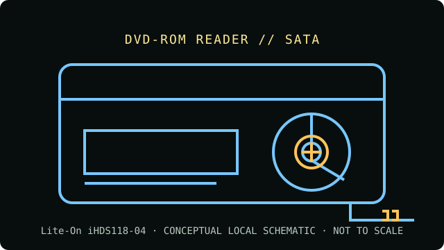

[ INDIVIDUAL COMPONENT // OPTICAL DRIVES ]
Lite-On iHDS118-04
18× internal SATA DVD-ROM reader. This model is documented as a reader, not a recorder. Match the complete model and revision label to source documentation before using the recorded-media compatibility notes.

IDENTIFICATION: Lite-On iHDS118-04 · confirm complete model suffix, hardware revision and firmware before assigning capabilities.
Verified specifications
| Catalog subcategory | DVD-ROM readers |
|---|---|
| Exact product identifier | Lite-On iHDS118-04 |
| Drive class | 18× internal SATA DVD-ROM reader |
| DVD read rate | DVD-ROM up to 18× |
| CD read rate | CD-ROM up to 48× |
| Supported formats | DVD-ROM, DVD±R, DVD±RW, DVD±R DL and DVD-RAM; CD-ROM, CD-R and CD-RW (read only; confirm the exact disc revision and firmware for recordable media). |
| Interface and mechanism | Internal 5.25-inch half-height tray-loading drive with Serial ATA data and power connections. |
| Host compatibility | Install in a standard 5.25-inch bay and attach both SATA data and power. Use a motherboard SATA port with optical-drive support; boot-from-optical behavior depends on system firmware. No writing capability is provided. |
| Write capability | None — this is a read-only DVD-ROM drive. |
Optical-media preservation notes
Read-only drive capabilities do not establish the condition or authenticity of a disc. Preserve an untouched source, create verified images for access, and record the drive model, firmware, host software, media type and read errors.
- Handle by the edge or center hole; avoid writing or adhesive labels on the data side.
- Store discs in protective cases in a cool, dry and dark environment. Keep more than one independently verified copy of important content.
- Do not infer support for a specific recordable-media subtype from DVD-ROM support alone; follow the exact drive documentation and record test results.
Identification and host checks
- Verify the model suffix, revision, connector type and jumper setting on the physical unit; near-identical family members can differ.
- Install in a standard 5.25-inch bay and attach both SATA data and power. Use a motherboard SATA port with optical-drive support; boot-from-optical behavior depends on system firmware. No writing capability is provided.
- Separate optical reading from filesystem support, copy protection, region setting, codec availability and boot-firmware behavior; those depend on the complete host setup.
Model documentation and preservation sources
- Lite-On iHDS118-04 specificationsModel-specific product specifications for the -04 DVD-ROM version.
- SHI — LiteOn iHDS118 drive overviewProduct listing for the iHDS118 family and its SATA DVD-ROM form.
- Lite-On manuals indexVendor-specific optical-drive documentation index; verify the exact model marking before applying a manual.
- Library of Congress — Sustainability of Digital FormatsPreservation context for ongoing access to digital content and format dependencies.
Maximum speeds are manufacturer or catalog ratings, not guaranteed speeds for every disc. Readability varies with disc condition, media type, firmware, host and software. This drive has no write function.